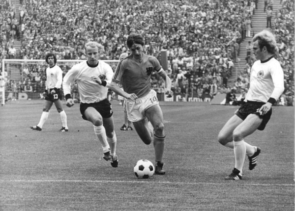

Voetbal is een wereldwijde sport die als sind 1863. Het spel bestaat uit twee teams van elf spelers die tegen elkaar voetballen. Dat houd in dat er een bal is die bijvoorbeeld team a bij team b in het doel moet krijgen. Dit mag niet met de hand of arm. Het is dus gebruikelijk om de bal te schoppen, vandaar de naam "voetbal". Er is maar 1 speler per team die de bal met zijn of haar handen mag raken. Die speler word ook wel de doelman genoemd. zoals je het in de naam hoort verdedigd deze speler het goal. Het spel word gespeeld op een grasveld, daarom is het gebruikelijk om voetbalschoenen te dragen. Deze speciale schoenen hebben noppen waardoor je minder snel uitglijd op het grasveld.

Men denk dat voetbal is ontstaan in Engeland. Later ontstond ook de Federation Internationale de Football Association (FIFA) en de organisatie Union of European Football Associations (UEFA). Deze organisaties organiseren grote toernooien zoals de Champions League en de Europa league. FIFA staat ook al bekend als een computerspel dat erg beroemd is. Het is een spellenserie dat al bestaat sinds 1993 en ontwikkeld is door EA. Het is een spel waarbij je tegen elkaar kan spelen. Je kan kiezen tussen landen en teams om het tegen elkaar op te nemen. Later zijn er ook andere gamemodes toegevoegd.